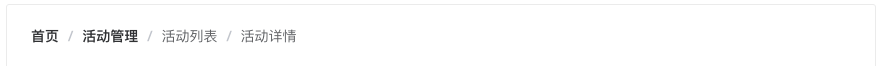
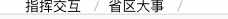

简介
我们开始只关注组件的功能实现，不考虑css分装、webpack配置、整体结构设计、单元测试等等，因为在后面会一步一步完善。让大家一起进步，实现一套简单的组件库。
在日常我们开发PC页面时经常会用到一个面包屑导航的功能，其实这个功能算是比较简单的功能，基本上用过Vue这个框架的人都能自己写出来。但是既然要写一个通用的可能就不是那么容易实现，我们首先要了解breadcrumb它都有什么功能。下面我们就先分析它都有什么功能，可以参考element/iview这种流行的Ui框架。
- 分析
breadcrumb组件功能 - 构思代码、编写代码
- 测试组件效果，(编写单元测试)
按照上面的三步一步一步的实现自己一个自己breadcrumb组件，废话不多说直接开干。
分析组件功能
我们可以去element/iview官方网去阅读一下他们的文档，在去github中看一下他们的源码。首先看一下他们是怎么使用，下面以element为例。
示例
1 | <el-breadcrumb separator="/"> |
效果图：

根据上面和代码我们可以看出breadcrumb有两个组件，分别为：
breadcrumb组件，并且它接受两个props属性：
sparator(props): 它是用来替换默认/分隔符的，并且它的类型为String类型。默认/sparatorClass(props): 它是用来给填充iconfont这种的图标分隔符，并且它的类型为String类型。没有默认值
breadcrumb-item组件，它是被breadcrumb包裹的组件，它也接受两个props属性：
to(props): 路由跳转对象，同vue-router的to, 并且它的类型为String/Object类型。没有默认值replace(props): 在使用to进行路由跳转时，启用replace将不会向history添加新记录, 类型是Boolean。默认false
我们大致知道了有两个组件，组件之间有嵌套关系，并且分别都支持两个props参数。并且有的props还有默认参数。下面我们就来一步一步实现自己已经知道的功能和配置。
实现组件
这里面有两个比较重要的知识点：
breadcrumb-item可以通过slot传入breadcrumb，同时breadcrumb-item中的内容也通过slot传入内容breadcrumb中接受的两个props怎么传入breadcrumb-item。 当然可以通过props一层一层传入，但是我们要写的好一点，这个里可以通过两种方式实现。provide/inject和this.$children来实现，这两种实现方式分别是element、iview实现方式，个人认为provide/inject更简洁一点。
第一步
一个简单的组件**breadcrumb**
1 | <template> |
另一个组件**breadcrumb-item**
1 | <template> |
到此我们至少实现了基本的功能，如下图所示：

第二步
但是我们观察这个图片可以看到，我们还是有一部分功能没有实现，如下几点：
- 组件的后面多了一个
/ - 当前的组件不能跳转，增加跳转
- 添加属性无障碍阅读
我们在breadcrumb组件中添加如下代码：
1 | // 新增代码 |
我们在breadcrumb-item组件中添加如下代码。
1 | <template> |
我们通过breadcrumb-item:last-child把最后一个/隐藏掉。
我们通过获取this.$refs.link实例，设置无障碍阅读role属性，设置无障碍阅读。并且绑定跳转事件，根据传入的repalce属性判断跳转方式。
到此我们就实现了一个自己可用的Breadcrum组件。
在线代码：
总结
在本篇文章中即实现了自己的ui组件breadcrumb，又学习了两个比较常用的Vue知识点。如果不了解solt可以去看vue官方文档。另一个provide/inject它类似于react中的context，如果想了解vue中其他好玩的属性、内置组件、修饰符可以关注我。